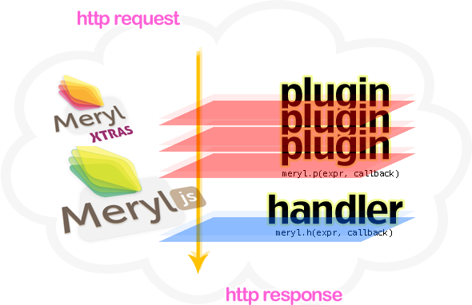

Meryl
Simple to use, fun to play and easy to modify!
About
Meryl is a minimalist web framework for nodejs platform which is very simple to use, fun to play and easy to modify.
Meryl remains as thin web layer over nodejs's built-in http module which mainly consists of plugins and handlers processed through every http request and response pipe.
Despite the small size of its code base, it has plenty of promising features. Some of the feature highlights are:
- Flexible architecture
- Url routing with an easy expression syntax.
- Powerful middleware infrastructure. Also compatible with Connect framework.
- Modular template rendering mechanism. You can choose using your mother's template engine.
- Dynamic template serving.
- Command line util for ad-hoc setup.

Install
Use npm for painless, quicky experience.
$ npm install meryl
If you don't have npm, you can simply put meryl in your '$HOME/.node_libraries' directory.
$ cd $HOME/.node_libraries $ git clone http://github.com/coffeemate/meryl.git
Yep, it's ready already. Now you can use it in your applications by loading as usual in nodejs.
var meryl = require('meryl');
Quick start
If you installed Meryl sucessfully, now you are ready to get your feet wet. Create a file named 'app.js' with the copy of contents below.
// app.js
var meryl = require('meryl');
meryl.h('GET /{yourname}?', function (req, resp) {
resp.send('Hello, ' + req.params.yourname || 'World');
}
);
meryl.run();
Ok, let's run it.
$ node app.js
Now, go hit your http client with the url http://localhost:3000,
also try http://localhost:3000/meryl
and guess what you will see.
Documentation
Meryl request
Meryl extended http request object passed as a parameter to meryl.h and meryl.p callback functions which gives you some utilities to handle http request data coming from the client.
req.params
Object containing query string and path parameters with url info
meryl.h('GET /list/{item}', function(req, resp) { // try: GET /list/comments?pagesize=10 resp.send('Listing ' + req.params.pagesize + ' ' + req.params.item); });req.postdata
Buffer object received from the clients. It's a raw data which must be processed to refine if required
meryl.h('POST /preview', function(req, resp) { // echo post data as text resp.headers['Content-Type'] = 'text/plain'; resp.send(req.postdata); });
Meryl response
Meryl extended http response object passed as a parameter to meryl.h and meryl.p callback functions which gives you some utilities to shape http response data delivering to the client.
resp.send(buffer)
Flushes response status and headers to the client side with the given contents of buffer parameter.
meryl.h('GET /', function(req, resp) { resp.send('Hello Meryl'); });resp.render(templateName, data)
Renders a template name by manipulating it with given context data.
meryl.h('GET /', function(req, resp) { resp.render('homepage', {foo: 'bar'}); });resp.headers
Object containing response headers.
meryl.h('GET /foo.pdf', function(req, resp) { resp.headers['Content-Type'] = 'application/pdf'; // omitted for brevity resp.send(pdfData); });resp.status
Http status code of client response.
meryl.h('GET /blank', function(req, resp) { resp.status = 204; // No Content resp.send(); });
Meryl context
Main execution context for all meryl's handler and plugin callbacks. It is the value of 'this' keyword inside meryl.h and meryl.p callback functions
this.options
Options object which is passed to the meryl.cgi function.
meryl.h('GET /', function(req, resp) { if(this.options.debug) console.log('some log'); // omitted for brevity }); require('http').createServer(meryl.cgi({debug:true})).listen(3000);
meryl.h[andle](expr, callback)
Registers a new http handler to global Meryl instance. First argument is the routing pattern which combines http verb with path expression while the second one is the callback function which will be executed in meryl context. If router pattern matches any http request the given callback executed with current req, resp objects.
If more than one handlers registered with same router pattern only the first registered one will be executed.
Routing pattern is very simple in mind:
$HTTP_VERB $PATH_EXPRESSIONThe whole expression builds a meryl flavored reqular expression which exposes two types of path parameters.
{ ... }– curly braced parameters are partial, they match until the meet'?','/'or'.'character< ... >– tagged(!) parameters are greedy, they match whatever they meet until you denote a block character.
Here are some examples:
{method} <whatever>GET /POST /index.htmlPUT /long/path/index.htmlDELETE /delete/something?foo=bar
GET /posts/{postid}GET /posts/this-is-a-long-post-idGET /posts/32432
GET /files/<filepath>.{ext}GET /files/filename.pdfGET /files/this/is/a/long/file/path.pdf
GET /(index.html)?GET /GET /index.html
Let's take look at a concrete example like below:
meryl.h('GET /repo/< filepath>/{version}', function(req, resp) {
var fileContents = readRepo(req.params.filepath, req.params.version);
resp.send(fileContents);
});
Also there are shorthand helper functions mapped to individual http methods. You can declare
handlers implicitly by using meryl.get(expr, callback),
meryl.post(expr, callback), meryl.put(expr, callback),
meryl.put(expr, callback) functions. You must omit explicit http method
names in expressions
meryl.get('/posts/{postid}', function(req, resp) {
resp.send('reading post: ' + req.params.postid);
});
meryl.put('/', function(req, resp) {
throw 'not supported';
});
meryl.p[lug]([expr] callback [, callback])
This function registers a plugin to the global meryl instance. More than one plugin can be executed on the same matched http request within the registration order. Plugin system simply exposes a middleware implementation for Meryl.
First argument is a router pattern which is also mentioned in meryl.h before.
The second one is the callback function which takes usual req, resp objects and alsa a function reference argument named 'next'. If you finished your work inside the plugin, you simply call 'next' to jump over to the next registered plugin.
You may want to break plugin iteration, then do not call 'next' method but be sure to end the http response in some way. Otherwise all the request/response pipe will hang which makes no sense for client side.
Here is a sample application demonstrating plugins.
// app.js
var meryl = require('meryl');
function validate(u, p) { return false; }
meryl.p('*', function(req, resp, next) {
resp.headers.Server = 'meryl-nodejs';
next();
});
meryl.p('{method} /private/*', function(req, resp, next) {
if(validate(req.params.uname, req.params.passwd)) {
next();
} else {
resp.status = 401;
throw 'access denied';
}
});
meryl.p('GET *', function(req, resp, next) {
console.log('logging all GET requests');
next();
});
meryl.h('GET /(index.html)?', function (req, resp) {
resp.send('Demonstrating plugins');
});
require('http').createServer(meryl.cgi()).listen(3000);
If you pass only callback function as first parameter by omitting expression Meryl assumes expression as '*' to match all requests.
meryl.p(function(req, resp, next) {
resp.headers.Server = 'meryl-nodejs';
next();
});
Also you should mind appending more callbacks. It is very useful when registering pre-defined modules.
var connect = require('connect');
meryl.p(connect.staticProvider(), connect.logger());
meryl.run();
meryl.fabby([opts] | ([expr] [,callback [, callback]]))
This is a funny function which features fabjs like chaining of Meryl plugins and handlers.
var connect = require('connect');
var meryl = require('meryl');
meryl.fabby
(connect.logger(), connect.staticProvider())
('GET /', function (req, resp) {
resp.render('home');
}
)
('GET /posts/{postid}', function (req, resp) {
resp.render('post');
}
)
('GET /posts/{postid}/comments/{commentid}', function (req, resp) {
resp.render('comment');
}
)
();
meryl.handleNotFound(cb)
Custom 404 file not found handler
meryl.handleError(cb)
Custom 500 server error handler
meryl.cgi(opts)
It's the main entry point for Meryl. It returns a function reference for using with nodejs's built-in http module while creating a server instance. You can pass an object for further using in Meryl context such 'this.options'.
require('http').createServer(meryl.cgi({debug:true})).listen(3000);
meryl.run(opts)
Helper function that runs Meryl instantly by wrapping it with an internally created http server. It returns running http server instance.
meryl.run({debug:true, port: 8080}))
Tips
- You can chain plugin and handler declerations as well.
- You may choose using verbose function names instead single letter ones.
- If you want to register a plugin for processing all requests you can simply pass only your callback to the meryl.p function.
- You can mark path expression variables as optional using a trailing question mark.
- Meryl is Connect framework compatible. You can plug any Connect middleware module to Meryl.
Below the example demonstrates all the tips above.
require('http').createServer(
require('meryl')
.plug(require('connect').staticProvider())
.plug(
function(req, resp, next) { log(req.params.pathname); next() })
.plug('POST *',
function(req, resp, next) { throw 'restricted'; })
.handle('GET /',
function(req, resp) { resp.send('homepage') })
.handle('GET /greet/({who}.html)?',
function(req, resp) { resp.send('Hello, '
+ req.params.who || 'World'); } )
.cgi()
).listen(3000);
Source
Meryl uses lovely git and github. You can find sources here. To obtain a copy, simply type:
git clone http://github.com/coffeemate/meryl.git
Meryl itself is licensed under MIT License http://github.com/coffeemate/meryl/blob/master/license
There are some kind people contributes to this project. Please join and help us to move Meryl ahead together.
- Kadir Pekel (Author)

- George Stagas
- Samuel Morello
- Tom R